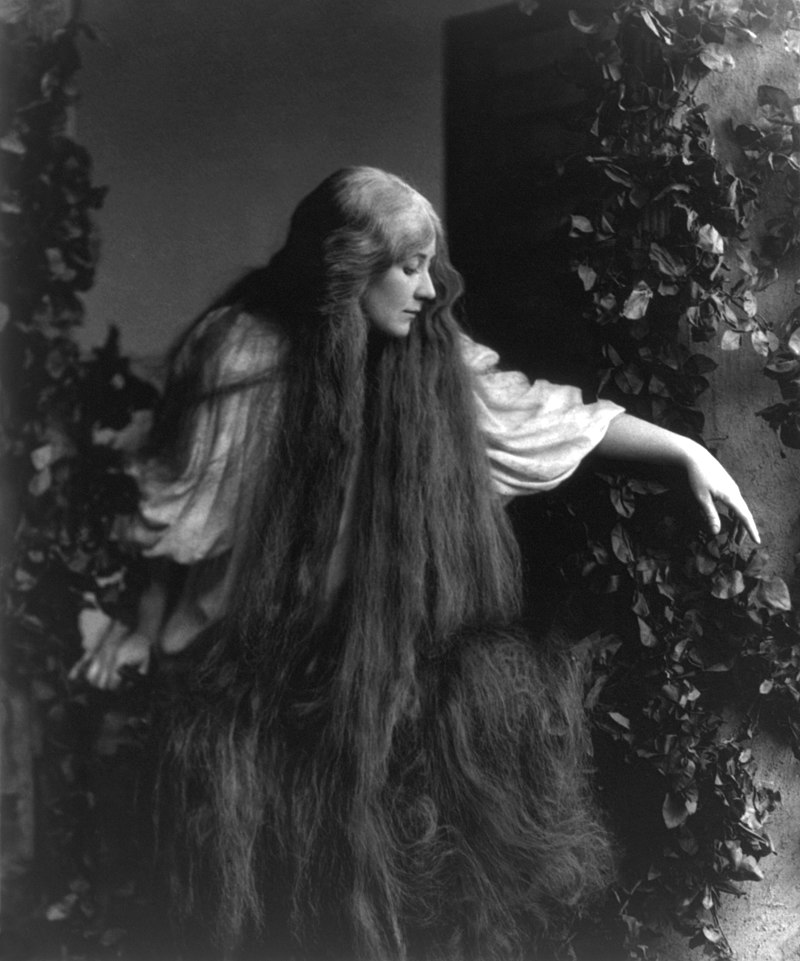

1. Пољем се њија
Serpente à travers champs
(Девета Руковет - 9ème guirlande :00:00 - 01:32,5 )
 Marko Kraljević par Ivan Meštrović (1883-1962) |
|
|
|
|
 Version Mokranjac |
 Dr Himzo Polovina (1927-1986) |
 Zoran Kalezić (1950-2023) |
 Branka Šćepanović (née en 1951) |
NOTES
|
[1] Према речима Сергија Димитријевића, аутора збирке „Народне песме лесковачког краја“, Т. 3, стр. 18, 1988, ова песма није црногорска, како изгледа да Мокрањац верује, већ је пореклом из Јабланице у Херцеговини или из региона који залива „Пуста Река“, притока Јужне Мораве, јужно од Ниша у Србији. Ово се боље уклапа у „равну равницу“ о којој песма говори. Поређење "младог јунака" са птицом (са сивим соколом) је слика која се налази у другим босанским песмама. Дуга коса младе даме, која јунакa омогућава да се попнете на bpx кулe, је хипербола која је наишла на велики успех у народној поезији, од причe "Рапунзела" браће Грим до "Мелисанде" y опери Метерлинка и Дебисија. |
 Mary Garden en Mélisande, en 1908, dans l'opéra de Claude Debussy |
[1] Selon Sergije Dimitrijević, l'auteur du recueil "Chant populaires de la région de Leskovac", T. 3, p. 18, 1988, ce chant n'est pas monténégrin, comme semble le croire Mokranjac, mais originaire de Jablanica en Herzégovine ou de la région arrosée par la "Pusta Reka", un affluent de la Južna Morava, au sud de Niš en Serbie. Cela cadre mieux avec la "plaine plate" dont parle le chant. La comparaison du "jeune héros" avec un oiseau de proie est une image qu'on retrouve dans d'autres chants de Bosnie. Les longs cheveux de la demoiselle qui permettent d'escalader une tour, sont une hyperbole qui a rencontré beaucoup de succès dans la poésie populaire, de Rapunzel des frères Grimm jusqu'à la Mélisande de Maeterlinck et Debussy.. |